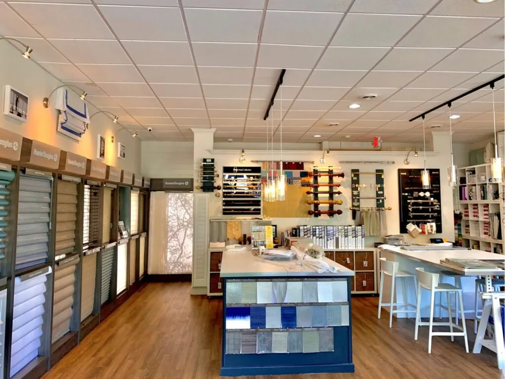

Contact
Contact us
Call, send a message, or visit our Shelton showroom by appointment.
Send us a message
Visit or call
- Phone
- (203) 225-9066
- Showroom
- 100 Beard Sawmill Rd, Suite 225
Shelton, CT 06484
Get directions - Hours
- Monday to Friday: by appointment only
Saturday and Sunday: closed - Follow
- Facebook · Google reviews
Where we work
Based in Shelton, we cover lower Fairfield County and the New Haven County shoreline.
Fairfield County
- Greenwich
- Stamford
- Darien
- New Canaan
- Norwalk
- Westport
- Weston
- Wilton
- Fairfield
- Easton
- Trumbull
- Shelton
The shoreline
- Milford
- Orange
- West Haven
- New Haven
- Branford
- Guilford
- Madison
Showroom by appointment. (203) 225-9066
Questions we hear often
What are your hours?
Monday to Friday by appointment only. We are closed Saturday and Sunday.
What areas do you serve?
We are based at 100 Beard Sawmill Rd, Suite 225 in Shelton, CT, and have served Fairfield County, the New Haven County shoreline, the New York metro area and beyond for over 25 years.
Do you offer free in-home consultations?
Yes. One of us comes to your home with samples, walks every room with you, and gives you a clear written quote after measuring every window.